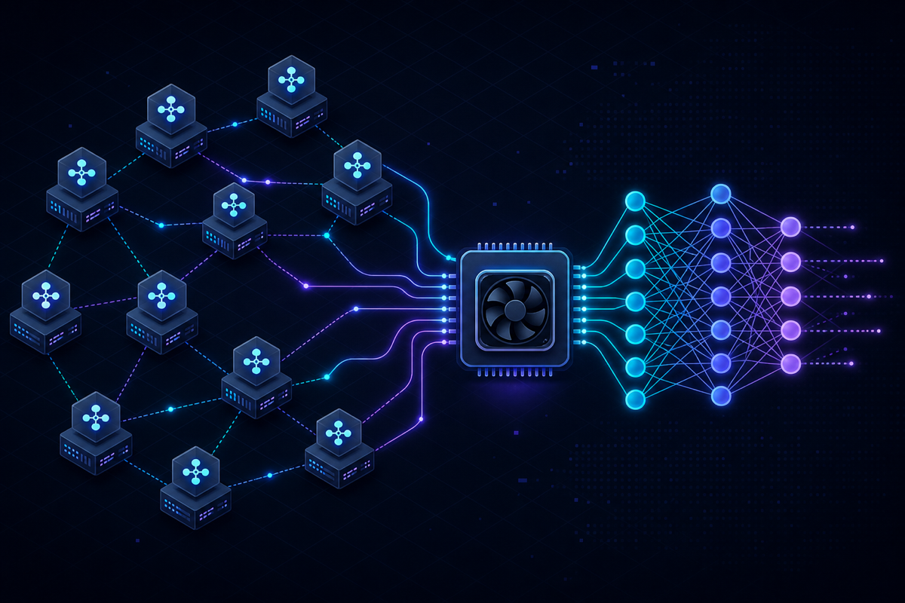

<!DOCTYPE html>
<html lang="en">
<head>
  <meta charset="UTF-8">
  <meta name="viewport" content="width=device-width, initial-scale=1.0, viewport-fit=cover">
  <title>Ray LLM: Role in LLM Pipelines &amp; Architecture | NKSCoder</title>
  <meta name="description" content="What is Ray LLM? How Ray fits in LLM pipelines — distributed preprocessing, batch inference, GPU scaling with Ollama and Python. By AI developer Nitesh Kumar Singh.">
  <meta name="keywords" content="Ray LLM, Ray distributed inference, Ray Serve, Ray Data, Ollama Ray, LLM pipeline Python, Nitesh, Nitesh Kumar Singh, NKSCoder, NKS Coder, NKS, NKS AI, coder, AI coder, AI developer, distributed LLM, GPU batch inference, Nitesh Kumar, nkscoder.in, Python coder, niteshkumar, niteshkumarsingh, nkscoder github">
  <meta name="author" content="Nitesh Kumar Singh">
  <link rel="author" href="https://nkscoder.in/">
  <meta name="robots" content="index, follow, max-image-preview:large">
  <meta name="googlebot" content="index, follow">
  <link rel="canonical" href="https://nkscoder.in/blog/ray-role-in-llm-pipelines.html">
  <meta property="og:type" content="article">
  <meta property="og:site_name" content="NKSCoder">
  <meta property="og:locale" content="en_US">
  <meta property="og:url" content="https://nkscoder.in/blog/ray-role-in-llm-pipelines.html">
  <meta property="og:title" content="What Is Ray's Role in LLM Pipelines?">
  <meta property="og:description" content="How Ray fits between Django, Celery, and Ollama for production LLM workloads — preprocessing, parallelism, and GPU orchestration.">
  <meta property="og:image" content="https://nkscoder.in/assets/blog/ray-llm-pipelines.jpg">
  <meta property="article:published_time" content="2026-06-15">
  <meta property="article:author" content="Nitesh Kumar Singh">
  <meta property="article:tag" content="Ray LLM">
  <meta property="article:tag" content="distributed AI">
  <meta property="article:tag" content="NKSCoder">
  <meta property="article:tag" content="NKS AI">
  <meta property="article:tag" content="coder">
  <meta name="twitter:card" content="summary_large_image">
  <meta name="twitter:title" content="Ray in LLM Pipelines — Role &amp; Architecture">
  <meta name="twitter:description" content="Distributed preprocessing, batch inference, and GPU scaling for production LLM systems.">
  <meta name="twitter:image" content="https://nkscoder.in/assets/blog/ray-llm-pipelines.jpg">
  <link rel="preload" href="../assets/fonts/inter-400.woff2" as="font" type="font/woff2" crossorigin>
  <link rel="preload" href="../styles.css" as="style">
  <link rel="stylesheet" href="../assets/fonts/fonts-inter.css">
  <link rel="stylesheet" href="../assets/fonts/fonts-mono.css" media="print" onload="this.media='all'">
  <link rel="stylesheet" href="../styles.css">
  <link rel="icon" href="data:image/svg+xml,<svg xmlns='http://www.w3.org/2000/svg' viewBox='0 0 100 100'><text y='.9em' font-size='90'>⚡</text></svg>">
  <script type="application/ld+json">
  {
    "@context": "https://schema.org",
    "@type": "BlogPosting",
    "headline": "Ray LLM: Role in LLM Pipelines",
    "description": "How Ray enables distributed preprocessing, batch LLM inference orchestration, and GPU worker scaling in production Python systems with Ollama and Django.",
    "image": "https://nkscoder.in/assets/blog/ray-llm-pipelines.jpg",
    "datePublished": "2026-06-15",
    "dateModified": "2026-06-28",
    "author": {
      "@type": "Person",
      "name": "Nitesh Kumar Singh",
      "url": "https://nkscoder.in/",
      "jobTitle": "AI Developer & Senior Software Developer"
    },
    "publisher": {
      "@type": "Person",
      "name": "Nitesh Kumar Singh",
      "url": "https://nkscoder.in/"
    },
    "url": "https://nkscoder.in/blog/ray-role-in-llm-pipelines.html",
    "keywords": ["Ray", "LLM", "Ollama", "distributed inference", "Ray Serve", "Ray Data", "Python", "GPU", "NKSCoder", "NKS", "NKS AI", "Nitesh Kumar Singh", "coder", "Nitesh", "Nitesh Kumar", "niteshkumar", "niteshkumarsingh", "NKS Coder", "nkscoder.in", "AI coder", "AI developer", "Python coder"],
    "articleSection": "AI & Distributed Systems",
    "inLanguage": "en-US",
    "isPartOf": { "@id": "https://nkscoder.in/blog/#blog" }
  }
  </script>
  <script type="application/ld+json">
  {
    "@context": "https://schema.org",
    "@type": "BreadcrumbList",
    "itemListElement": [
      { "@type": "ListItem", "position": 1, "name": "Home", "item": "https://nkscoder.in/" },
      { "@type": "ListItem", "position": 2, "name": "Blog", "item": "https://nkscoder.in/blog/" },
      { "@type": "ListItem", "position": 3, "name": "Ray LLM: Role in LLM Pipelines", "item": "https://nkscoder.in/blog/ray-role-in-llm-pipelines.html" }
    ]
  }
  </script>
  <script type="application/ld+json">
  {
    "@context": "https://schema.org",
    "@type": "FAQPage",
    "mainEntity": [
      {
        "@type": "Question",
        "name": "What is Ray LLM?",
        "acceptedAnswer": {
          "@type": "Answer",
          "text": "Ray LLM refers to using the Ray distributed computing framework for LLM workloads — batch preprocessing of documents, parallel GPU inference with Ollama, and scaling Python workers across multiple machines. Ray sits between Django/Celery (job queues) and Ollama (model inference) in production fintech pipelines."
        }
      },
      {
        "@type": "Question",
        "name": "What is Ray's role in LLM pipelines?",
        "acceptedAnswer": {
          "@type": "Answer",
          "text": "Ray handles the heavy parallel work in LLM pipelines: splitting thousands of PDFs across workers, preprocessing text, orchestrating batch calls to Ollama on NVIDIA GPUs, and aggregating results. Celery manages the queue; Ray scales the compute."
        }
      }
    ]
  }
</head>
<body>
  <div class="bg-grid" aria-hidden="true"></div>
  <div class="bg-glow bg-glow--1" aria-hidden="true"></div>
  <div class="bg-glow bg-glow--2" aria-hidden="true"></div>

  <header class="header">
    <nav class="nav container" aria-label="Main navigation">
      <a href="../index.html" class="logo" aria-label="NKSCoder home">
        <picture>
          <source type="image/avif" srcset="../assets/brand/nkscoder-logo-72.avif" width="72" height="72">
          <source type="image/webp" srcset="../assets/brand/nkscoder-logo-72.webp" width="72" height="72">
          
        </picture>
        <span class="logo-text"><span class="logo-bracket">&lt;</span>NKSCoder<span class="logo-bracket">/&gt;</span></span>
      </a>
      <ul class="nav-links">
        <li><a href="../index.html" class="nav-link">Home</a></li>
        <li><a href="/blog/" class="nav-link active">Blog</a></li>
        <li><a href="/login/" class="nav-link">Studio</a></li>
        <li><a href="/contact.html" class="nav-link nav-link--cta">Contact</a></li>
      </ul>
      <button class="nav-toggle" aria-label="Toggle menu" aria-expanded="false">
        <span></span><span></span><span></span>
      </button>
    </nav>
  </header>

  <main class="article-page">
    <article class="container article">
      <nav class="article-breadcrumb" aria-label="Breadcrumb">
        <a href="../index.html">Home</a> · <a href="index.html">Blog</a> · AI &amp; Distributed Systems
      </nav>

      <header class="article-header">
        <span class="blog-tag">Ray · LLM · Distributed Systems</span>
        <h1>Ray LLM: Role in LLM Pipelines</h1>
        <p class="article-meta">
          By <strong>Nitesh Kumar Singh</strong> · AI Developer, Quess Corp Ltd (Airtel Payments Bank) ·
          <time datetime="2026-06-15">June 15, 2026</time>
        </p>
      </header>

      <figure class="article-hero-img">
        <picture>
          <source type="image/avif" srcset="../assets/blog/ray-llm-pipelines.avif">
          <source type="image/webp" srcset="../assets/blog/ray-llm-pipelines.webp">
          
        </picture>
      </figure>

      <div class="article-content">
        <p class="article-lead">
          When teams add LLMs to production systems, the bottleneck is rarely the model alone. Upload a thousand
          bank statements, PDFs with broken tables, and messy CSV exports — and a single Python process collapses
          long before <strong>Ollama</strong> or your GPU gets a chance to shine. That is where <strong>Ray</strong>
          earns its place in the stack.
        </p>

        <p>
          Ray is <em>not</em> an LLM framework like LangChain or an inference server like vLLM. It is a
          <strong>distributed runtime for Python</strong> that parallelizes work across CPU cores and machines.
          In LLM pipelines, Ray handles the heavy lifting <em>around</em> inference: parsing documents, chunking
          text, batching prompts, fanning out GPU jobs, and aggregating results — at scale.
        </p>

        <h2>The LLM Pipeline Stack — Who Does What?</h2>
        <p>In production fintech systems I have built, each tool has a clear boundary:</p>
        <ul>
          <li><strong>Django</strong> — REST API, auth, uploads, job status, PostgreSQL persistence</li>
          <li><strong>Celery + RabbitMQ</strong> — durable task queue, retries, scheduling, dead-letter handling</li>
          <li><strong>Ray</strong> — parallel CPU/GPU compute across workers (data prep + batch orchestration)</li>
          <li><strong>Ollama / NVIDIA GPU</strong> — local LLM inference (token generation, embeddings)</li>
        </ul>
        <p>
          Celery decides <em>what</em> runs and <em>when</em>. Ray decides <em>how many cores and GPUs</em> work on
          it simultaneously. Ollama runs the actual model. Confusing these layers leads to slow pipelines and
          overloaded GPUs.
        </p>

        <h2>Ray's Four Roles in LLM Workloads</h2>

        <h3>1. Distributed document preprocessing</h3>
        <p>
          Before any LLM sees a bank statement, you must extract text from PDFs, normalize tables, split pages into
          chunks, and clean OCR noise. Doing this sequentially on one machine takes minutes per file.
        </p>
        <p>
          Ray partitions the workload: each <code>@ray.remote</code> worker processes a page, a chunk, or an entire
          file. A 200-page PDF that took 8 minutes on one core can finish in under 2 minutes across eight workers —
          without rewriting your Pandas or PyPDF logic.
        </p>

        <h3>2. Parallel chunking for LLM context windows</h3>
        <p>
          LLMs have token limits. A 50MB CSV or a 40-page statement must be split into chunks that fit the context
          window, processed independently, then merged. Ray maps each chunk to a remote task, collects structured
          JSON outputs, and deduplicates overlapping transactions.
        </p>
        <p>
          This is CPU-bound parallelism — exactly what Ray was designed for. The LLM never receives a raw 200K-row
          dataframe; it receives clean, right-sized prompts.
        </p>

        <h3>3. Batch inference orchestration across GPUs</h3>
        <p>
          GPU inference is expensive and serial if you send one prompt at a time. Ray coordinates batch jobs:
        </p>
        <ul>
          <li>Group chunks into batches sized for VRAM (e.g. 8–16 prompts per batch on a 24GB GPU)</li>
          <li>Dispatch batches to Ollama endpoints on multiple GPUs via Ray actors</li>
          <li>Track completion, handle partial failures, and merge categorization results</li>
          <li>Throttle concurrency so GPU memory is not exhausted</li>
        </ul>
        <p>
          Celery triggers the overall job; Ray fans out the parallel inference work inside that job. You keep
          RabbitMQ queues clean while Ray manages the compute graph.
        </p>

        <h3>4. Aggregation and post-processing</h3>
        <p>
          After inference, you still need to merge transaction categories, resolve party names, compute risk scores,
          and write to PostgreSQL. Ray parallelizes Pandas aggregations across result sets — the same pattern as
          preprocessing, but on structured LLM output instead of raw documents.
        </p>

        <h2>Ray vs Celery — Why Not Just Celery?</h2>
        <p>
          Celery excels at <strong>task orchestration</strong>: enqueue, retry, schedule, acknowledge. It is not
          built for fine-grained data parallelism inside a single task.
        </p>
        <p>
          If one Celery task must process 500 PDF pages, a single worker holds the entire job until finished —
          blocking the queue and wasting other cores on the machine. Ray spawns hundreds of lightweight tasks
          that share memory efficiently and return results to a driver process.
        </p>
        <p><strong>Rule of thumb:</strong></p>
        <ul>
          <li>Use <strong>Celery</strong> for job lifecycle (upload received → process → notify user)</li>
          <li>Use <strong>Ray</strong> for compute parallelism inside that job (parse 500 pages in parallel)</li>
          <li>Use <strong>Ollama</strong> for the actual LLM call on each batch</li>
        </ul>

        <h2>Ray vs Ray Serve — Do You Need Both?</h2>
        <p>
          <strong>Ray Core</strong> (<code>@ray.remote</code>) is enough for batch pipelines triggered by Celery —
          which is what I use for bank statement analysis. You spin up Ray inside a Celery task, run parallel work,
          shut down, and return.
        </p>
        <p>
          <strong>Ray Serve</strong> adds a model-serving layer: deploy Ollama or Hugging Face models as HTTP
          endpoints with autoscaling replicas. Reach for Ray Serve when you need always-on inference APIs with
          dynamic GPU scaling — not for one-off batch jobs triggered by file uploads.
        </p>
        <p>
          <strong>Ray Data</strong> sits between them: a streaming dataset API for reading millions of records
          from S3 or PostgreSQL, transforming them, and feeding inference pipelines. Useful when your LLM input
          is a data lake, not individual file uploads.
        </p>

        <h2>Production Architecture (Simplified)</h2>
        <p>Here is the flow we run for AI bank statement analysis:</p>
        <ol>
          <li>User uploads PDF/CSV via Django REST API → file stored in S3 → Celery task enqueued on <code>ingest.bulk</code></li>
          <li>Celery worker starts a Ray cluster (or connects to an existing one)</li>
          <li>Ray remote tasks extract text, split into chunks, validate schema</li>
          <li>Ray batches chunks and dispatches to Ollama on NVIDIA GPU (concurrency limited per GPU)</li>
          <li>LLM returns structured JSON per chunk — categories, entities, risk flags</li>
          <li>Ray aggregates results, deduplicates transactions, writes to PostgreSQL</li>
          <li>Celery task completes → Django webhook notifies the client</li>
        </ol>
        <p>
          Ray's role spans steps 3, 4, and 6. Without it, steps 3 and 6 become serial bottlenecks and step 4
          cannot scale beyond one GPU's batch capacity.
        </p>

        <h2>Minimal Code Pattern</h2>
        <p>A simplified version of the Ray + Ollama pattern:</p>
        <pre><code># Inside a Celery task
import ray

ray.init(num_cpus=8)

@ray.remote
def preprocess_chunk(chunk_id, raw_text):
    # PDF extraction, cleaning, token counting
    return {"chunk_id": chunk_id, "prompt": build_prompt(raw_text)}

@ray.remote(num_gpus=1)
def infer_batch(prompts, ollama_url):
    # Call Ollama API with batched prompts on one GPU
    return [call_ollama(p, ollama_url) for p in prompts]

# Fan out preprocessing
chunks = ray.get([preprocess_chunk.remote(i, t) for i, t in enumerate(text_chunks)])

# Batch and infer across GPUs
batches = group_into_batches(chunks, batch_size=12)
results = ray.get([infer_batch.remote(b, OLLAMA_URL) for b in batches])

ray.shutdown()</code></pre>
        <p>
          In production, add error handling, idempotency keys, structured logging, and GPU memory guards.
          The pattern stays the same: Celery owns the job; Ray owns the parallelism.
        </p>

        <h2>When Ray Is Overkill</h2>
        <ul>
          <li>Processing fewer than ~50 documents per day on a single server</li>
          <li>LLM calls that fit in one API request with no heavy preprocessing</li>
          <li>Teams without operational experience running distributed Python</li>
          <li>Prototypes where a simple <code>for</code> loop and one Ollama instance is enough</li>
        </ul>
        <p>
          Ray adds operational complexity — cluster management, memory tuning, debugging remote failures.
          Adopt it when serial processing is measurably blocking your pipeline, not because it is trendy.
        </p>

        <h2>Key Takeaways</h2>
        <ol>
          <li><strong>Ray is not the LLM</strong> — it is the distributed runtime that makes LLM pipelines fast</li>
          <li><strong>Preprocessing dominates</strong> — most time is spent before inference; Ray parallelizes that</li>
          <li><strong>Pair with Celery</strong> — queue durability and Ray compute are complementary, not competing</li>
          <li><strong>Batch across GPUs</strong> — Ray orchestrates multi-GPU Ollama inference without custom threading</li>
          <li><strong>Measure first</strong> — profile where time is spent; add Ray only at the bottleneck</li>
        </ol>

        <div class="article-cta">
          <p>Building an LLM pipeline with Ray, Ollama, or Django? I help fintech teams ship production AI systems.</p>
          <a href="/contact.html" class="btn btn--primary">Get in Touch</a>
          <a href="bank-statement-analysis-ollama-gpu.html" class="btn btn--ghost">Ollama GPU Case Study</a>
          <a href="scaling-python-celery-rabbitmq-ray.html" class="btn btn--ghost">Celery + Ray Article</a>
        </div>
      </div>
    </article>
  </main>

  <footer class="footer">
    <div class="container footer-inner">
      <p>&copy; 2026 Nitesh Kumar Singh · <a href="https://nkscoder.in">nkscoder.in</a></p>
      <div class="footer-links">
        <a href="/blog/">← Back to Blog</a>
        <a href="/login/">Studio</a>
        <a href="/contact.html">Contact</a>
      </div>
    </div>
  </footer>

  <script src="../script.js" defer></script>
</body>
</html>
